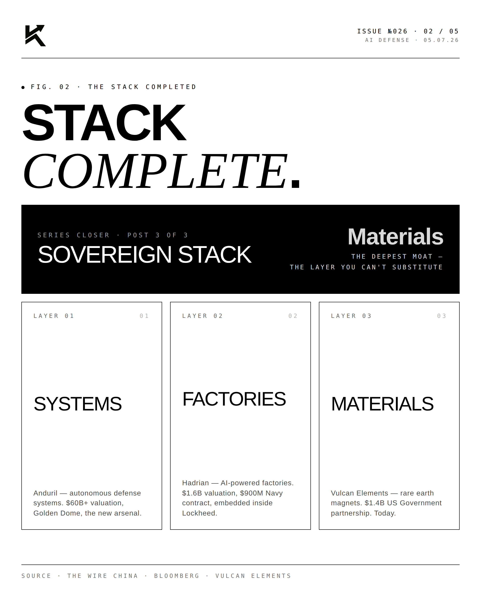
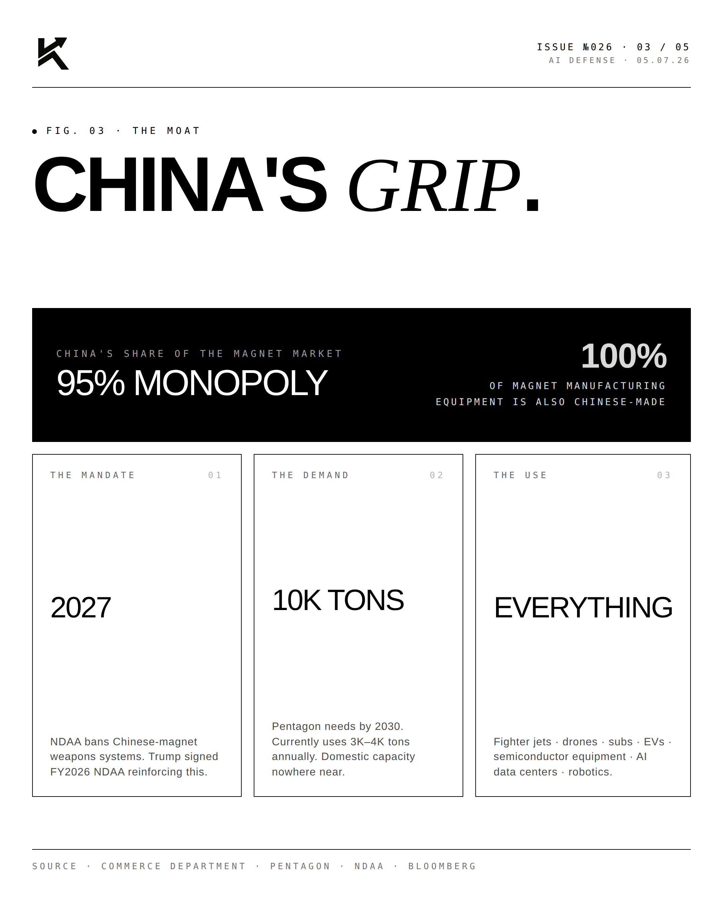
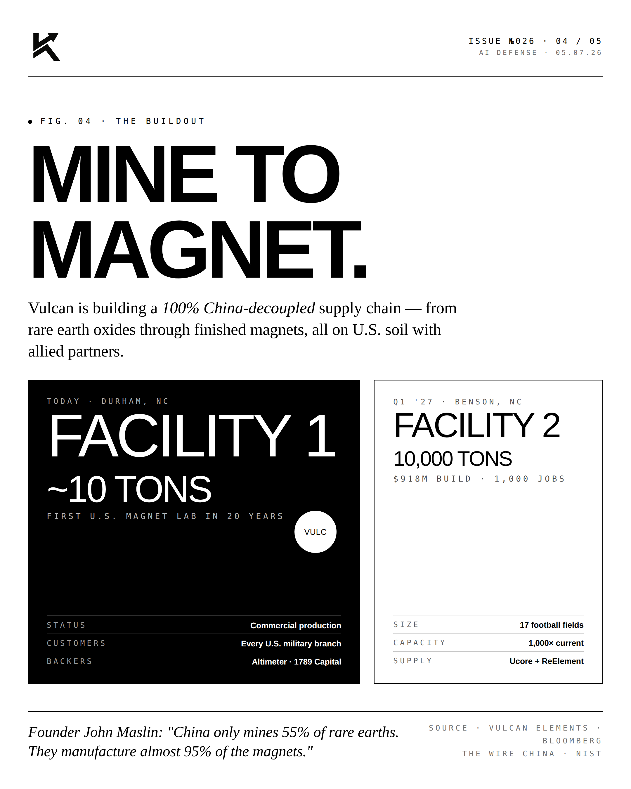
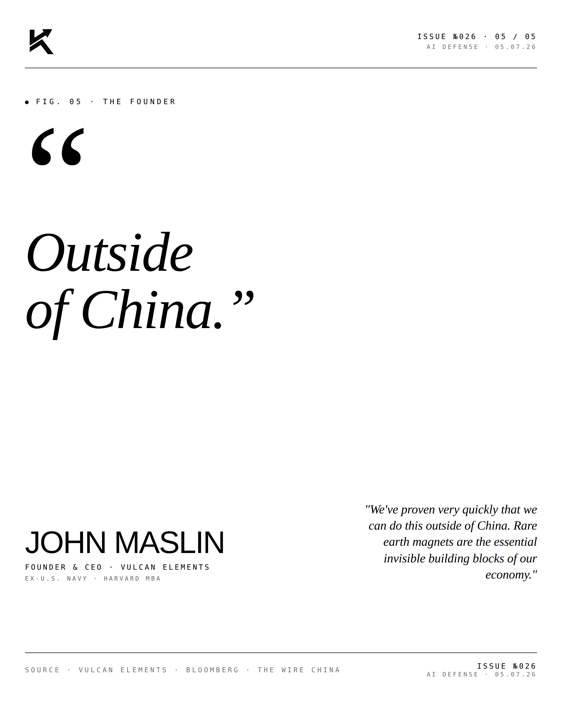

Rare Earth.
China controls 90% of global rare earth processing. Vulcan Elements is one of two domestic operators rebuilding the supply chain. The strategic minerals story has begun.

The Moat.
Rare earth elements are not actually rare — they're abundant in the Earth's crust. What's rare is processing capability. China processes ~90% of global supply. Vulcan Elements is rebuilding domestic processing capacity for neodymium-iron-boron (NdFeB) magnets — the backbone of EVs, wind turbines, F-35s, and guided weapons.

The Buildout.
Vulcan's first commercial-scale plant is under construction. Strategic Department of Defense backing. Partnerships with major industrial and defense customers. The Reindustrialize America thesis applies here at the most fundamental layer: minerals.
"The minerals are
the war."JOHN MAAFounder & CEO · Vulcan Elements
"You cannot have a sovereign defense industrial base without sovereign rare earth processing. Period."



Two operators. One supply chain. The strategic minerals story has begun.
Disclosure
The author is a direct early-stage investor in Vulcan Elements and a Limited Partner in 1789 Capital, which also holds a position. Personal commentary and editorial analysis. Not investment advice, not an offer or solicitation.